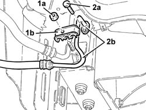
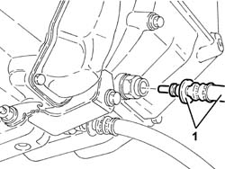

2130A28 oil delivery/return line to radiator (one) - r r
- Path
- Procedures > 21 GEARBOX > 2130 AUTOMATIC TRANSMISSION AND DIFFERENTIAL > 2130A automatic transmission assembly > 2130A28 oil delivery/return line to radiator (one) - r r
- Kind
- repair procedure (removal / refitting; the operation number is the code)
- Applies to
- engines: 2.5 V6; all production periods
- Interactive page
- https://sloeber94.github.io/elrnDB-a156/en/#/3237989
Applies to: engines: 2.5 V6; all production periods; only with equipment: Q-System
 Removing
Removing
 Refitting
RefittingPosition the vehicle on the ramp.
4450B10 Front WHEEL (one) - R.R.
7055B64 Engine compartment DUST shield in front wheel arch (one), left or right - R.R.
7055B54 under-engine guard - r r Guard beneath engine].
Undo the drain plug and drain the gearbox oil.
1. Undo the nut (1a) and remove the bracket (1b) securing the fluid supply/return pipe to the radiator.
2. Undo the bolt (2a) and disconnect the fluid supply/return pipe to the radiator (2b), radiator side.

Applies to: engines: 2.5 V6; all production periods; only with equipment: Q-System
1. Disconnect the quick-release fitting of the fluid supply/return pipe to the radiator, automatic transmission side and remove the pipe together with O Rings.

Applies to: engines: 2.5 V6; all production periods; only with equipment: Q-System
Refitting
RemovingPlace the fluid supply/return pipes to the radiator back in its housing together with O rings and connect it with the quick release fitting, automatic transmission side.
Connect the fluid supply/return pipes to the radiator, radiator side and secure with the bolt.
Place the mounting bracket for the fluid supply/return pipes to the radiatorback in its housing and secure with the bolt.
Tighten the gearbox oil drain plug to the specified torque.
 | Fastening | Component | Ø | Value (daNm) |
|---|---|---|---|---|
- | - | AUTO TRANSMISSION PLUGS | - | 2.3 - 5.5 |
7055B54 under-engine guard - r r Guard beneath engine].
7055B64 Engine compartment DUST shield in front wheel arch (one), left or right - R.R.
4450B10 Front WHEEL (one) - R.R.
2130A04 Automatic transmission FLUID - Check level and top up, .if necessary